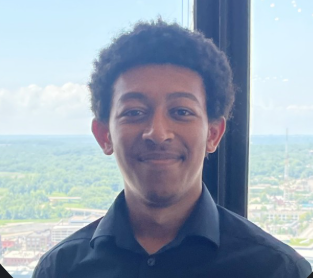

About Me
Hi! I'm Khalid, a Computer Science and AI student at Drake University who's passionate about technology and problem-solving. I love exploring how different programming languages work and finding creative ways to apply what I learn in class to real-world challenges. When I'm not coding, you'll probably find me working on cybersecurity puzzles or diving into a good sci-fi book!
Interests & Hobbies
- Gaming: Love FPS games like Fortnite, COD, Apex, and Valorant for the competitive strategy. Also really into RPGs and fantasy games like Elden Ring, Elder Scrolls, and Sekiro for the immersive worlds and challenging gameplay.
- Soccer: Play Intramural and Casual games on campus and occassionally follow Premier League. Love both the physical activity and the tactical side of the game.
- Cybersecurity Competitions: Founding member of Drake's Cyber Club. We do CTF challenges and placed 5th in The ISEAGE Cyber Defense Competition last year!
- Reading: Sci-fi novels, programming books, and anything about AI or cybersecurity trends.
- Problem-Solving: Whether it's debugging code, solving CTF challenges, or figuring out game mechanics, I love tackling complex puzzles.
What I'm Up To
This semester I'm planning to continue working on some cool research projects with professors Manley, Urness and Migunov here at Drake. This past summer I completed a software engineering internship at Dwolla, a fintech company, where I got hands-on experience with Typescript, React, Next.js, and working on production systems. I'm also a founding member of Drake's Cyber Club, which we started Last September, and we actually placed 5th nationally in a major hackathon! Through this web development course, I'm hoping to build projects that combine my interests in AI and Cybersecurity with great user experiences.
Contact
Email: Khalidmabdulhakim@gmail.com
GitHub: K-H-A-L-I-D